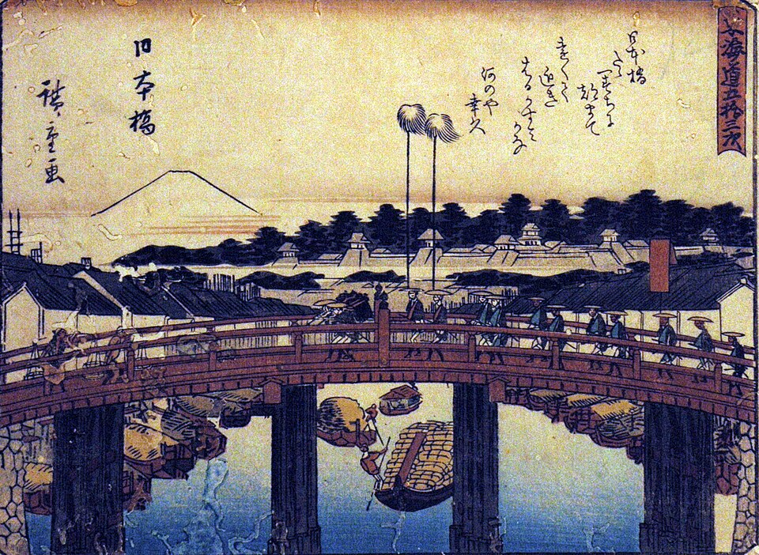
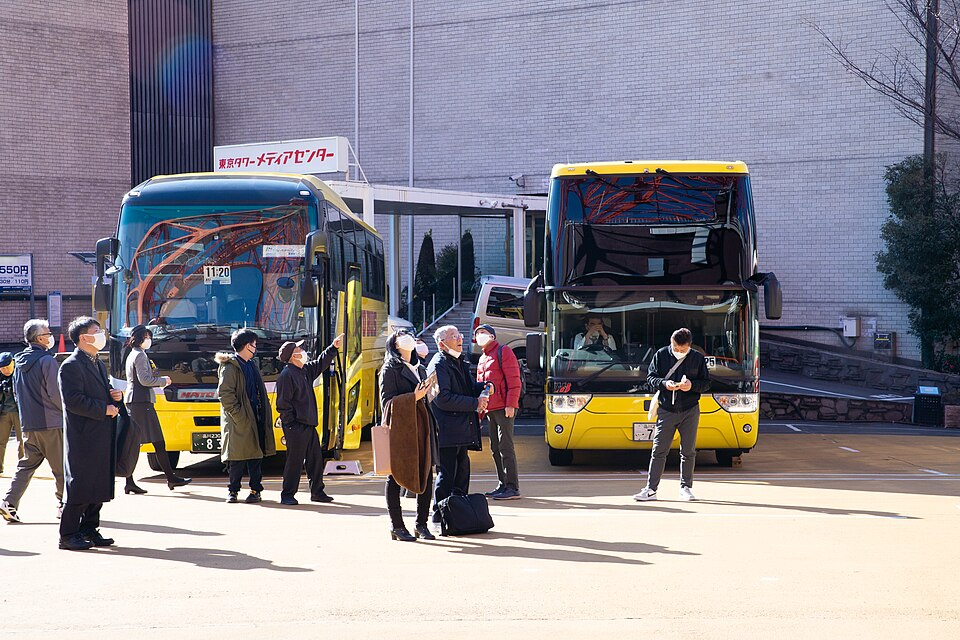
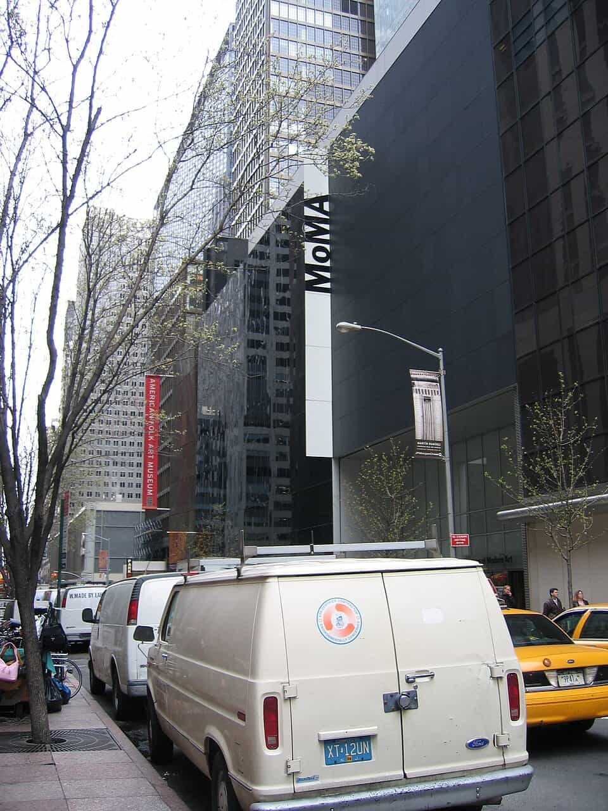
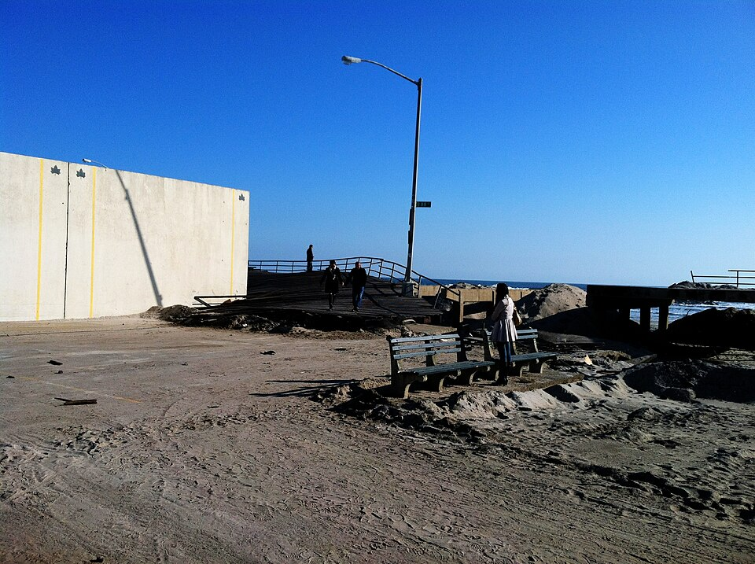

Furuzamami Beach, Zamami Island, Okinawa Hashi photo · CC BY 3.0 · highhero:chicago
Chicago skyline from Lake Michigan Ashokf11 · CC BY-SA 3.0 · highhero:pittsburgh
Downtown Pittsburgh from Mount Washington EEJCC · CC BY-SA 4.0 · highhero:philadelphia
Philadelphia skyline from the Schuylkill River 颐园居 · CC BY-SA 4.0 · highhero:washingtondc
United States Capitol, west front Architect of the Capitol · Public domain · highhero:sanfrancisco
San Francisco skyline from the Golden Gate Bridge Mariordo (Mario Roberto Durán Ortiz) · CC BY-SA 4.0 · highhero:columbus
Downtown Columbus skyline from North Bank Park on the Scioto River Rfgagel · Public domain · highhero:miami
Downtown Miami skyline at night across Biscayne Bay Daniel Christensen · CC BY-SA 3.0 · highhero:orlando
Downtown Orlando high-rises from Lake Eola Park Benoît Prieur · CC0 1.0 · highhero:madison
Madison skyline from Lake Monona John Benson · CC BY 2.5 · highhero:ghent
Graslei and Korenlei along the Leie, Ghent User:LimoWreck · CC BY-SA 3.0 · highhero:brussels
Grand-Place, Brussels Theedi · CC BY-SA 4.0 · highhero:antwerp
Grote Markt and City Hall, Antwerp (2007) Maros M r a z ( Maros ) · CC BY-SA 3.0 · highhero:rhineland
View over Bonn from the Rabenlay Skywalk (2025) Dietmar Rabich · CC BY-SA 4.0 · highhero:saarland
The Saar loop at Mettlach Wolfgang Staudt from Saarbruecken, Germany · CC BY 2.0 · highhero:tokyo
Tokyo skyline at sunset around Tokyo Tower (golden hour) David Kernan · CC BY 4.0 · highhero:newyork
Brooklyn Bridge and Downtown Manhattan at golden hour John Cunniff from New York, NY, USA · CC BY 2.0 · highhero:statecollege
Old Main, Penn State University Park, in summer George Chriss · CC BY 2.5 · highhero:indianapolis
The Central Canal and the downtown Indianapolis skyline Daniel Schwen · CC BY-SA 4.0 · highhero:akron
Akron skyline at sunset from the Towpath Trail Dillguy9 · CC0 1.0 · highhero:harrisburg
The Pennsylvania State Capitol dome from State Street, Harrisburg w_lemay · CC BY-SA 2.0 · highhero:bruges
The Rozenhoedkaai canal, Bruges Jean-Christophe BENOIST · CC BY 2.5 · highhero:liege
Montagne de Bueren stairway, Liège FriedrichFrisch · CC BY-SA 4.0 · highhero:aachen
The Markt and City Hall, Aachen Armin Kleiner · CC BY-SA 4.0 · highhero:us
Golden Gate Bridge at golden hour Ashley98lee · CC BY-SA 4.0 · highhero:belgium
Gravensteen castle, Ghent, at golden hour Trougnouf (Benoit Brummer) · CC BY 4.0 · highhero:germany
Old Town Hall on the Markt, Bonn (2009) Mike Peel · CC BY-SA 4.0 · highhero:hokkaido
Otaru Canal, Hokkaido, in summer (17 August 2014) Suicasmo · CC BY-SA 4.0 · highhero:siliconvalley
Stanford Memorial Church from the Main Quad (June 2025) Frank Schulenburg · CC BY-SA 4.0 · highhero:dayton
Dayton skyline over the Great Miami River The Mighty Tim Inconnu from Dayton, United States of America · CC BY 2.0 · highhero:youngstown
Lanterman's Mill, Mill Creek Park, Youngstown (May 2008) Keith Roberts · Public domain · highhero:erie
Erie's bayfront and downtown from the Bicentennial Tower (14 June 2013) AndreCarrotflower · CC BY-SA 3.0 · high
Cards
tokyo#asukayama-park Asukayama Park (飛鳥山公園) Asukayama Park, Kita, Tokyo ↑ＰＯＮ · CC BY-SA 3.0 · hightokyo#chidorigafuchi Chidorigafuchi (千鳥ヶ淵緑道) Cherry blossom along the Chidorigafuchi moat "Tyoron2" · Public domain · hightokyo#chureito-pagoda-arakurayama-sengen-park Chūreitō Pagoda — Arakurayama Sengen Park (忠霊塔) Chūrei-tō pagoda and Mount Fuji, Arakurayama Sengen Park Manishprabhune · CC BY-SA 4.0 · hightokyo#edo-tokyo-museum Edo-Tokyo Museum Edo-Tokyo Museum building, Ryōgoku (Kikutake, 1993) Wiiii · CC BY-SA 3.0 · hightokyo#edo-tokyo-open-air-architectural-museum Edo-Tokyo Open Air Architectural Museum (江戸東京たてもの園) East Zone of the Edo-Tokyo Open Air Architectural Museum at dusk Kestrel · CC BY-SA 4.0 · hightokyo#enoshima Enoshima (江の島) Enoshima from Kugenuma beach Quercus acuta · CC BY-SA 4.0 · hightokyo#gotoku-ji Gōtoku-ji (豪徳寺) Maneki-neko figurines at Gōtoku-ji Niwrat · CC0 1.0 · hightokyo#great-buddha-of-kamakura-kotoku-in Great Buddha of Kamakura — Kōtoku-in (鎌倉大仏) The Great Buddha of Kamakura at Kōtoku-in Dandy1022 · CC BY-SA 3.0 · hightokyo#hakone-shrine Hakone Shrine (箱根神社) Hakone Shrine on the shore of Lake Ashi Leng Cheng · CC BY 2.0 · hightokyo#hama-rikyu-gardens Hama-rikyū Gardens (浜離宮恩賜庭園) Hama-rikyū Garden in winter Daderot · CC0 1.0 · hightokyo#hase-dera-kamakura Hase-dera, Kamakura (長谷寺) Kannon-dō hall of Hase-dera, Kamakura Junichi · CC BY-SA 3.0 · hightokyo#imperial-palace-east-gardens Imperial Palace East Gardens (皇居東御苑) Imperial Palace East Gardens, Tokyo john w · CC BY 2.0 · hightokyo#inokashira-park Inokashira Park (井の頭恩賜公園) Inokashira Park in spring, Mitaka 京浜にけ · CC BY-SA 3.0 · hightokyo#kameido-tenjin-shrine Kameido Tenjin Shrine (亀戸天神社) Wisteria at Kameido Tenjin Shrine Manishprabhune · CC BY-SA 4.0 · hightokyo#kaminarimon Kaminarimon (雷門) Kaminarimon, the outer gate of Sensō-ji Daderot · Public domain · hightokyo#kanda-myojin Kanda Myōjin (神田明神) Cherry blossom at Kanda Myōjin Yoshikazu TAKADA from Tokyo, Japan · CC BY 2.0 · hightokyo#kegon-falls Kegon Falls (華厳滝) Kegon Falls, Nikkō National Park Geomr~commonswiki · CC BY-SA 1.0 · hightokyo#kiyosumi-garden Kiyosumi Garden (清澄庭園) Kiyosumi Teien Japanese garden Kakidai · CC BY-SA 4.0 · hightokyo#koishikawa-korakuen Koishikawa Kōrakuen (小石川後楽園) Koishikawa Kōrakuen Gardens Guilhem Vellut from Annecy, France · CC BY 2.0 · hightokyo#kokyo-gaien-and-nijubashi Kōkyo Gaien & Nijūbashi (皇居外苑・二重橋) Nijūbashi bridge at the Imperial Palace Bernard Spragg. NZ from Christchurch, New Zealand · Public domain · hightokyo#meiji-jingu Meiji Jingū (明治神宮) Meiji Shrine, Shibuya Rs1421 · CC BY-SA 3.0 · hightokyo#meiji-jingu-gaien-and-icho-namiki-ginkgo-avenue Meiji Jingū Gaien & Ichō Namiki Ginkgo Avenue (明治神宮外苑 いちょう並木) Ginkgo avenue (Ichō Namiki) of Meiji Jingū Gaien in autumn Kakidai · CC BY-SA 4.0 · hightokyo#mount-takao Mount Takao (高尾山) Izuna Gongen-dō hall of Yakuō-in on Mount Takao Rob Young from United Kingdom · CC BY 2.0 · hightokyo#nezu-museum Nezu Museum (根津美術館) Entrance approach of the Nezu Museum, Minami-Aoyama Kentin · CC BY-SA 3.0 · hightokyo#nezu-shrine Nezu Shrine (根津神社) Nezu Shrine, Bunkyō (2010) Wiiii · CC BY-SA 3.0 · high

tokyo#nihonbashi-bridge Nihonbashi Bridge (日本橋) Nihonbashi Bridge Utagawa Hiroshige · Public domain · hightokyo#nikko-tosho-gu Nikkō Tōshō-gū (日光東照宮) Yōmeimon gate, Nikkō Tōshō-gū (2024) Jpatokal · CC BY-SA 4.0 · hightokyo#owakudani Ōwakudani (大涌谷) Ōwakudani valley from the Hakone cable car そらみみ · CC BY-SA 3.0 · hightokyo#rikugien-gardens Rikugien Gardens (六義園) Rikugien Garden, Komagome Guilhem Vellut from Annecy, France · CC BY 2.0 · hightokyo#shibamata-taishakuten Shibamata Taishakuten (柴又帝釈天) Shibamata Taishakuten (2009) Aimaimyi · CC BY-SA 3.0 · hightokyo#shinjuku-gyoen-national-garden Shinjuku Gyoen National Garden (新宿御苑) The Japanese garden in Shinjuku Gyoen MaedaAkihiko · CC BY-SA 4.0 · hightokyo#state-guest-house-akasaka-palace State Guest House, Akasaka Palace (迎賓館赤坂離宮) Main entrance of the State Guest House, Akasaka Palace Yasu · CC BY-SA 3.0 · hightokyo#suga-shrine-stairs-yotsuya Suga Shrine stairs, Yotsuya (須賀神社 男坂) The stairs below Suga Shrine, Yotsuya Hisagi · CC BY-SA 4.0 · hightokyo#toki-no-kane-kawagoe-time-bell Toki no Kane — Kawagoe Time Bell (時の鐘) Toki no Kane bell tower, Kawagoe (2013) Kentagon · CC BY-SA 4.0 · hightokyo#tokyo-national-museum Tokyo National Museum (東京国立博物館) Honkan of the Tokyo National Museum Wiiii · CC BY-SA 3.0 · hightokyo#tokyo-skytree Tokyo Skytree (東京スカイツリー) Tokyo Skytree, Sumida (2016) Mattias Hill · CC BY-SA 4.0 · hightokyo#tokyo-station-marunouchi-building Tokyo Station Marunouchi Building (東京駅丸の内駅舎) Tokyo Station Marunouchi Building Alexandr3126 · CC BY-SA 4.0 · high

tokyo#tokyo-tower Tokyo Tower (東京タワー) Tokyo Tower (2023) Dick Thomas Johnson from Tokyo, Japan · CC BY 2.0 · hightokyo#tsurugaoka-hachimangu Tsurugaoka Hachimangū (鶴岡八幡宮) Dance stage and main hall of Tsurugaoka Hachimangū Ocdp · CC0 1.0 · hightokyo#ueno-park Ueno Park (上野恩賜公園) Shinobazu Pond in Ueno Park Guilhem Vellut from Annecy, France · CC BY 2.0 · hightokyo#ukiyo-e-ota-memorial-museum-of-art Ukiyo-e Ōta Memorial Museum of Art (太田記念美術館) Ōta Memorial Museum of Art, Jingūmae Rs1421 · CC BY-SA 3.0 · hightokyo#yasukuni-shrine Yasukuni Shrine (靖國神社) Haiden (worship hall) of Yasukuni Shrine Kakidai · CC BY-SA 4.0 · hightokyo#yoyogi-national-gymnasium Yoyogi National Gymnasium (国立代々木競技場) Yoyogi National Gymnasium from the Gorin footbridge (2020) Suicasmo · CC BY-SA 4.0 · hightokyo#zojo-ji Zōjō-ji (増上寺) Zōjō-ji, Minato, Tokyo (2014) User:Piotrus · CC BY-SA 3.0 · highcleveland#a-christmas-story-house-and-museum A Christmas Story House & Museum A Christmas Story House, Tremont (2008) J. Miers - User: (WT-shared) Jtesla16 at wts wikivoyage · CC BY-SA 1.0 · highcleveland#cleveland-museum-of-art Cleveland Museum of Art The 1916 building of the Cleveland Museum of Art Daderot · Public domain · highcleveland#cuyahoga-valley-national-park Cuyahoga Valley National Park The Cuyahoga River in Cuyahoga Valley National Park Ken Lund · CC BY-SA 2.0 · highcleveland#franklin-castle Franklin Castle Franklin Castle (Hannes Tiedemann House), Ohio City Christopher Busta-Peck · CC BY-SA 1.0 · highcleveland#huntington-reservation-and-beach Huntington Reservation & Beach Huntington Beach, Bay Village, with the Cleveland skyline beyond Heather McLaughlin from Cleveland, Ohio, United States · CC BY 2.0 · highcleveland#lake-view-cemetery-whole-grounds Lake View Cemetery (whole grounds) James A. Garfield Memorial in Lake View Cemetery Ray Curtis · CC BY-SA 4.0 · highcleveland#rock-and-roll-hall-of-fame Rock & Roll Hall of Fame Rock and Roll Hall of Fame building, Cleveland (2016) MusikAnimal · CC BY-SA 4.0 · highcleveland#rocky-river-reservation-and-fort-hill-stairs Rocky River Reservation & Fort Hill Stairs Rocky River Reservation, Cleveland Metroparks Chris Light · CC BY-SA 4.0 · highcleveland#soldiers-and-sailors-monument Soldiers' & Sailors' Monument Soldiers' and Sailors' Monument, Public Square, Cleveland Cards84664 · CC BY-SA 4.0 · highcleveland#squires-castle Squire's Castle Squire's Castle, North Chagrin Reservation sunsets_for_you · CC BY-SA 2.0 · highcleveland#st-theodosius-russian-orthodox-cathedral St. Theodosius Russian Orthodox Cathedral Onion domes of St. Theodosius Cathedral above I-490, Tremont w_lemay · CC BY-SA 2.0 · highcleveland#steamship-william-g-mather Steamship William G. Mather Steamship William G. Mather museum ship, Cleveland JuanPDP · Public domain · highcleveland#terminal-tower-observation-deck Terminal Tower Observation Deck Terminal Tower from the Warehouse District edseloh · CC BY-SA 2.0 · highcleveland#the-arcade-old-arcade The Arcade (Old Arcade) The Cleveland Arcade, 401 Euclid Avenue Martin Linsey, HABS photographer · Public domain · highcleveland#virginia-kendall-ledges-overlook Virginia Kendall Ledges Overlook Rock staircase on the Ledges trail, Virginia Kendall Benjaminlehmanphotography · CC BY-SA 4.0 · highcleveland#wade-memorial-chapel Wade Memorial Chapel Main entrance of the Wade Memorial Chapel, Lake View Cemetery Ray Curtis · CC BY-SA 4.0 · highnewyork#american-museum-of-natural-history American Museum of Natural History Central Park West façade of the American Museum of Natural History Ferfive · CC BY 4.0 · highnewyork#bethesda-terrace-and-fountain Bethesda Terrace and Fountain Bethesda Fountain from Bethesda Terrace, Central Park Francisco Diez from New Jersey, USA · CC BY 2.0 · highnewyork#brooklyn-botanic-garden Brooklyn Botanic Garden Japanese Hill-and-Pond Garden, Brooklyn Botanic Garden Andre Carrotflower · CC BY-SA 4.0 · highnewyork#brooklyn-bridge-park Brooklyn Bridge Park Brooklyn Bridge Park Piers 5 and 6 with Manhattan and the Brooklyn Bridge Wusel007 · CC0 1.0 · highnewyork#brooklyn-museum Brooklyn Museum Exterior of the Brooklyn Museum, Eastern Parkway Kidfly182 · CC BY-SA 4.0 · highnewyork#cathedral-of-st-john-the-divine Cathedral of St. John the Divine West façade of the Cathedral of St. John the Divine (2009) Simon.Absonditus · CC BY-SA 3.0 · highnewyork#central-park Central Park Bow Bridge in autumn, Central Park David Joyce from Gray, TN, United States · CC BY-SA 2.0 · highnewyork#chrysler-building Chrysler Building Crown of the Chrysler Building Petri Krohn (English Wikipedia) · CC BY-SA 3.0 · highnewyork#dia-beacon Dia Beacon Entrance of Dia:Beacon, the former Nabisco printing plant (2006) Rolf Müller · CC BY-SA 3.0 · highnewyork#empire-state-building Empire State Building Empire State Building from the Top of the Rock (2010) Jiuguang Wang · Public domain · highnewyork#flatiron-building Flatiron Building Flatiron Building, Manhattan (2019) dconvertini · CC BY-SA 2.0 · highnewyork#freshkills-park Freshkills Park Freshkills Park, Staten Island Jonathan Warren · CC0 1.0 · high

newyork#museum-of-modern-art-moma Museum of Modern Art (MoMA) Exterior of the Museum of Modern Art, 53rd Street Casper Moller from London, United Kingdom · CC BY 2.0 · highnewyork#neue-galerie-new-york Neue Galerie New York Neue Galerie New York in the William Starr Miller House, 1048 Fifth Avenue Eden, Janine and Jim from New York City · CC BY 2.0 · highnewyork#new-york-botanical-garden New York Botanical Garden Enid A. Haupt Conservatory, New York Botanical Garden King of Hearts · CC BY-SA 4.0 · highnewyork#new-york-chinese-scholars-garden New York Chinese Scholar's Garden The New York Chinese Scholar's Garden at Snug Harbor Igor koyfman · Public domain · highnewyork#new-york-state-pavilion New York State Pavilion Observation towers from inside the New York State Pavilion (2015) Erin Slonaker · CC BY-SA 4.0 · highnewyork#pelham-bay-park Pelham Bay Park Orchard Beach in Pelham Bay Park from the air (2020) Bebo2good1 · CC BY-SA 4.0 · highnewyork#prospect-park Prospect Park Long Meadow, Prospect Park, on a fall morning (2018) Badtartin · CC BY-SA 4.0 · high

newyork#rockaway-beach-and-boardwalk Rockaway Beach and Boardwalk Rockaway Boardwalk Roman Iakoubtchik from New York, USA · CC BY-SA 2.0 · highnewyork#rockefeller-center Rockefeller Center 30 Rockefeller Plaza 句 · CC BY-SA 4.0 · highnewyork#snug-harbor-cultural-center-and-botanical-garden Snug Harbor Cultural Center & Botanical Garden Northern buildings of Sailors' Snug Harbor, Staten Island (2007) Dmadeo · CC BY-SA 4.0 · highnewyork#solomon-r-guggenheim-museum Solomon R. Guggenheim Museum Solomon R. Guggenheim Museum (Frank Lloyd Wright, 1959) Kristoffer Arvidsson (Göteborgs konstmuseum) · CC BY-SA 4.0 · highnewyork#st-patricks-cathedral St. Patrick's Cathedral Fifth Avenue façade of St. Patrick's Cathedral (2012) Jean-Christophe BENOIST · CC BY 3.0 · highnewyork#staten-island-ferry-st-george-terminal Staten Island Ferry (St. George Terminal) St. George Ferry Terminal, Staten Island (2014) Fletcher6 · CC BY 3.0 · highnewyork#the-metropolitan-museum-of-art The Metropolitan Museum of Art Fifth Avenue entrance façade of the Metropolitan Museum of Art Hugo Schneider · CC BY-SA 2.0 · highnewyork#van-cortlandt-park Van Cortlandt Park Van Cortlandt Lake in Van Cortlandt Park Mbochart · CC BY-SA 4.0 · highnewyork#whitney-museum-of-american-art Whitney Museum of American Art Whitney Museum (Renzo Piano, 2015) from the west, 99 Gansevoort Street Beyond My Ken · CC BY-SA 4.0 · highsingapore/chinatown#buddha-tooth-relic-temple-and-museum Buddha Tooth Relic Temple & Museum Buddha Tooth Relic Temple and Museum from South Bridge Road (2010) Riction at English Wikipedia · CC BY 3.0 · highsingapore/chinatown#sri-mariamman-temple Sri Mariamman Temple Gopuram of the Sri Mariamman Temple, South Bridge Road Jakub Hałun · CC BY 4.0 · highwheeling#meadowcroft-rockshelter-and-historic-village Meadowcroft Rockshelter & Historic Village Meadowcroft Rockshelter (2012) Jbarta · CC0 1.0 · highwheeling#pennsylvania-trolley-museum Pennsylvania Trolley Museum Pennsylvania Trolley Museum, Washington, PA (2007) John Mueller from Shenandoah Valley of VA, USA · CC BY 2.0 · highwheeling#west-virginia-independence-hall West Virginia Independence Hall West Virginia Independence Hall, 1528 Market Street WeaponizingArchitecture · CC BY-SA 4.0 · highwheeling#wheeling-suspension-bridge Wheeling Suspension Bridge Wheeling Suspension Bridge over the Ohio River (HAER, Library of Congress) Unknown author · Public domain · high